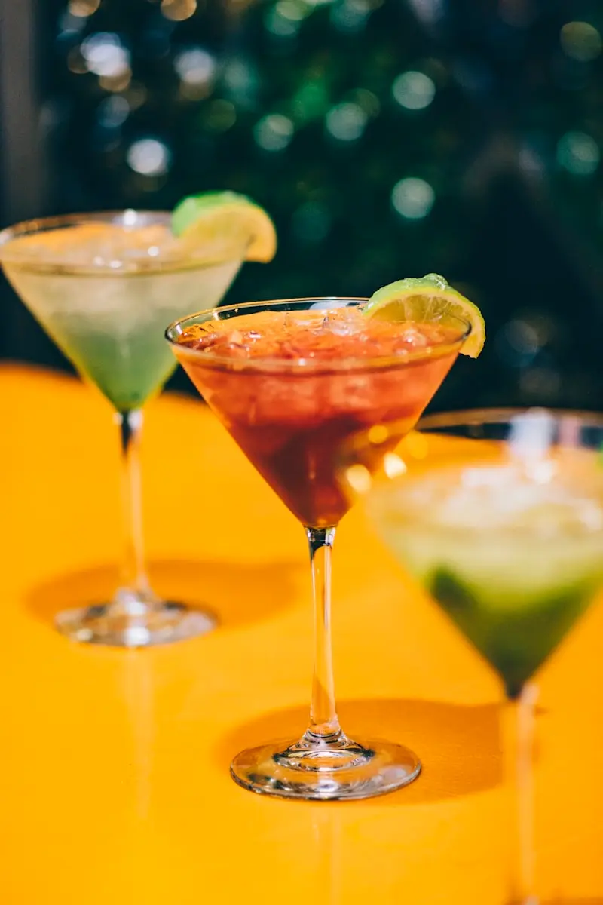
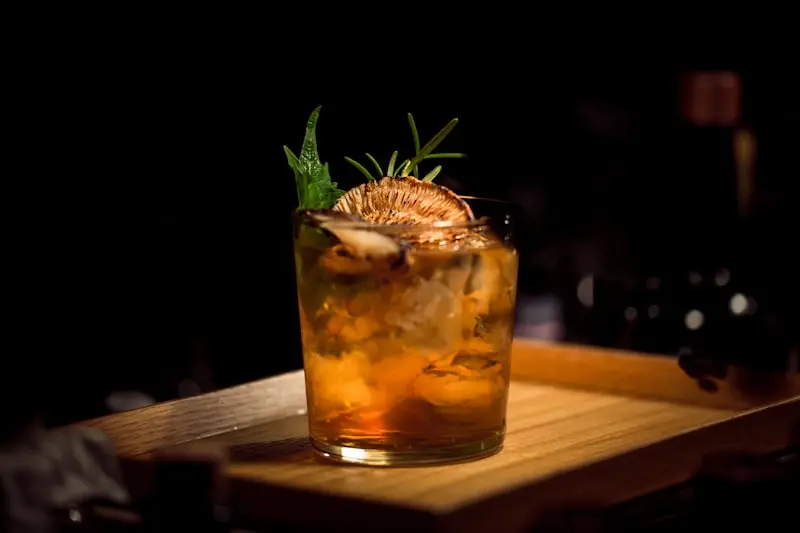

Our Wine, Spirits & Beer Selection in Murfreesboro, TN
CNG Wine & Spirits at 2750 S Rutherford Blvd, Murfreesboro, TN 37130. Mon–Sat 8 AM–11 PM · Sun 10 AM–10 PM. Wines, spirits, craft beer, champagne & more.

What Wines Does CNG Wine & Spirits Carry?
From bold reds to crisp whites, our wine selection at 2750 S Rutherford Blvd spans the globe.
Categories
What We Carry

What Spirits Does CNG Wine & Spirits Carry?
Premium spirits from world-renowned distilleries, available at our Murfreesboro store.
Categories
What We Carry

What Craft Beers Does CNG Wine & Spirits Carry?
Local Tennessee favorites and international craft brews, available in Murfreesboro.
Categories
What We Carry

What Champagne & Sparkling Wine Does CNG Carry?
Celebrate any occasion with our champagne and sparkling wine selection in Murfreesboro.
Categories
What We Carry

Does CNG Wine & Spirits Sell Mixers & Accessories?
Everything you need for the perfect cocktail, available at our Murfreesboro store.
Categories
What We Carry

Does CNG Wine & Spirits Carry Specialty Items & Gift Sets?
Unique finds, seasonal specialties, and Tennessee local products at our Murfreesboro store.
Categories
What We Carry
Can't Find What You're Looking For?
Our inventory is always changing. Visit CNG Wine & Spirits at 2750 S Rutherford Blvd, Murfreesboro, TN 37130 or call (615) 895-8777 — we're happy to help you find exactly what you need or place a special order.
GOT QUESTIONS?
Frequently Asked Questions About Our Selection
Common questions about what CNG Wine & Spirits carries in Murfreesboro, TN
CNG Wine & Spirits carries red wines, white wines, rosé, sparkling wines, and dessert wines from around the world. Our selection includes Napa Valley Cabernets, French Burgundy and Bordeaux, Italian Chianti and Barolo, Argentinian Malbec, and more. Visit us at 2750 S Rutherford Blvd, Murfreesboro, TN 37130 or call (615) 895-8777.
CNG Wine & Spirits carries whiskey, bourbon, vodka, rum, gin, tequila, mezcal, cognac, and brandy from top distilleries worldwide. Our spirits include Tennessee Whiskey, Kentucky Bourbon, Scotch Single Malts, Japanese Whisky, Irish Whiskey, and aged tequilas. Find us at 2750 S Rutherford Blvd, Murfreesboro, TN 37130 or call (615) 895-8777.
Yes! CNG Wine & Spirits proudly stocks Tennessee craft breweries, locally produced spirits, and Tennessee-made wines. Ask our knowledgeable staff for local recommendations when you visit us at 2750 S Rutherford Blvd, Murfreesboro, TN 37130, or call (615) 895-8777.
Yes! CNG Wine & Spirits carries gift baskets, limited edition bottles, seasonal selections, rare finds, and Tennessee local products. We also carry cocktail mixers, bitters, craft syrups, and barware. Visit us at 2750 S Rutherford Blvd, Murfreesboro, TN 37130 or call (615) 895-8777.
Absolutely! If you are looking for a specific bottle we do not currently have in stock, CNG Wine & Spirits is happy to place a special order. Visit us at 2750 S Rutherford Blvd, Murfreesboro, TN 37130 or call (615) 895-8777 to request your bottle.
Yes! CNG Wine & Spirits offers delivery in Murfreesboro, TN through DoorDash and Uber Eats. Search for CNG Wine & Spirits on either app for 30–60 minute delivery to your door. Must be 21 or older. Call us at (615) 895-8777 or visit us at 2750 S Rutherford Blvd, Murfreesboro, TN 37130.